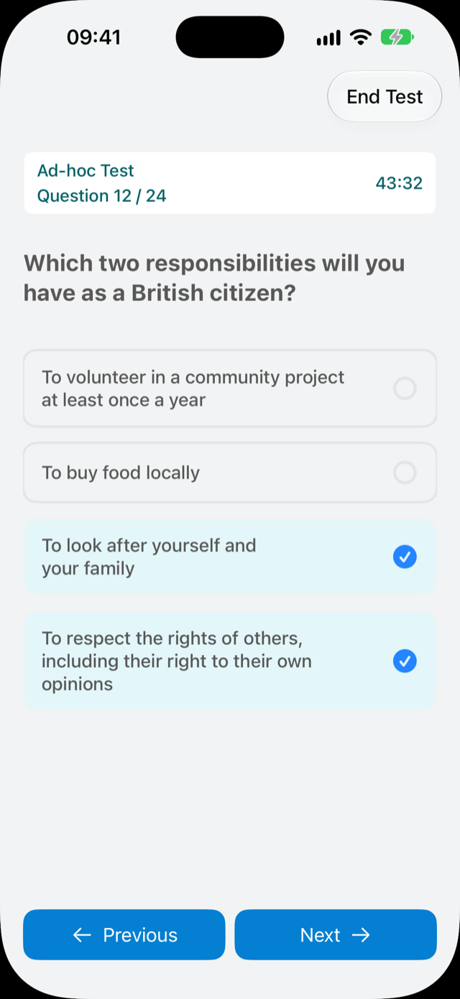
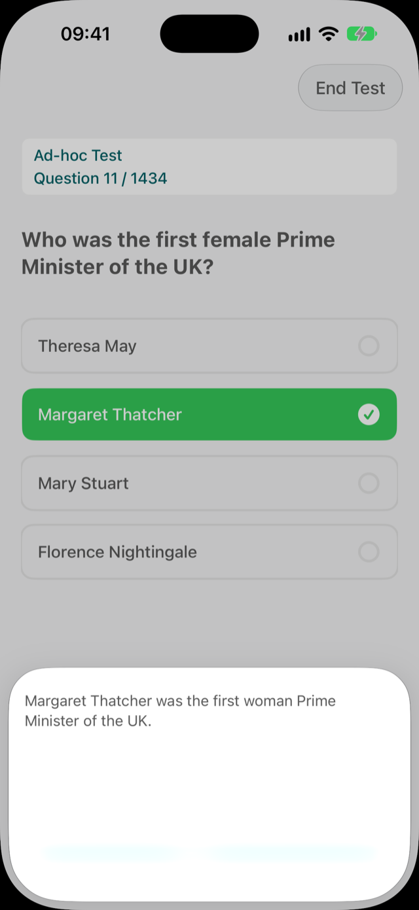

500+ practice questions
Exam-style questions covering all of Discover Canada, from rights and responsibilities and Canadian history to Parliament, elections, symbols and the regions.
Focused tools that cover the whole study guide, without ads, accounts or distractions.
Exam-style questions covering all of Discover Canada, from rights and responsibilities and Canadian history to Parliament, elections, symbols and the regions.
20 questions against a 45-minute clock with the same 75% pass mark as the real test. Each one mixes questions from every chapter.
Questions are hand-sorted into focused topics, so you can drill one area at a time. Perfect for dates, provinces and territories, wars and the people who shaped Canada.
See straight away whether you were right, with a clear explanation so the answer actually sticks.
Questions you miss or skip keep coming back until you get them right twice in a row.
See your scores by topic and over time, so you know exactly where to focus and when you are ready.
Designed to feel simple and calm, so studying never feels like a chore.

Practice tests mirror the official format, so nothing on the day comes as a surprise.

Every question comes with instant feedback and a short explanation based on Discover Canada.

Mistakes review collects every question you missed or skipped and brings it back until you have truly learned it.

Track your progress across every topic and build a steady habit with a short daily challenge.
Questions are organized around the ten chapters of Discover Canada: The Rights and Responsibilities of Citizenship.
The Charter, your freedoms and the duties that come with citizenship.
Indigenous peoples, English and French, and a diverse country.
From the first peoples and New France to Confederation and the World Wars.
Arts, sport, science and inventions, and a changing society.
Federal state, parliamentary democracy and constitutional monarchy.
Voting, ridings, forming a government and other levels of government.
Laws, courts, police and getting legal help.
The Crown, the flag, the maple leaf, anthems, honours and holidays.
A trading nation and the industries that drive it.
Provinces, territories and capitals, from the Atlantic to the North.
A simple routine of a few minutes a day is all it takes.
No account or sign-up needed. Open the app and start practising straight away.
Work through each chapter of Discover Canada and read the explanations for anything you get wrong.
Sit full timed tests and review your mistakes until you pass comfortably every time.
When IRCC invites you to take the test, go in confident that you know the material.
Download for free and start practising today. Unlock premium features with a single in-app purchase, with no subscription.
Nothing between you and your studying. Just focused, effective preparation.
No account, email address or personal details needed. Just open the app and start.
Study anywhere, on your commute or travelling, even without an internet connection.
The citizenship test is part of applying for Canadian citizenship, and applicants aged 18 to 54 usually need to take it. It has 20 multiple-choice or true-or-false questions, you have 45 minutes, and you need at least 15 correct answers (75%) to pass.
Questions are based on the official study guide, Discover Canada: The Rights and Responsibilities of Citizenship.
No one can legitimately offer the actual exam questions. The app contains over 500 exam-style questions, written in its own words from facts in Discover Canada and covering every chapter of the guide, so you will be familiar with the kind of questions you will see on the day.
Yes. The question bank was written in 2026 from the current edition of Discover Canada, and every answer is checked against the guide.
The app is free to download and start practising. Premium features can be unlocked with a single in-app purchase. There is no subscription and there are no ads.
Yes. Everything works without an internet connection, so you can study on the bus, on a flight or anywhere with poor signal.
The app runs on iPhone (iOS 17 or later), iPad (iPadOS 17 or later) and on Macs with Apple silicon running macOS 14 or later. There is currently no Android version.
Any question you get wrong or skip is added to your mistakes list. In review mode those questions keep coming back until you answer each one correctly twice in a row, so weak spots turn into strengths.
No. Canada Citizen Test Practice is an independent study app and is not affiliated with or endorsed by Immigration, Refugees and Citizenship Canada (IRCC) or the Government of Canada. Official information about the test is on canada.ca.